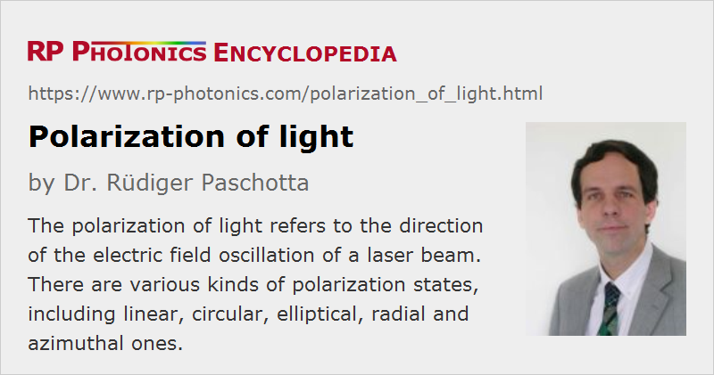

Polarization of Light
Definition: direction of the electric field oscillation of a light beam
German: Polarisation von Licht
Categories: general optics, lasers
How to cite the article; suggest additional literature
Author: Dr. Rüdiger Paschotta
In many respects, light can be described as a wave phenomenon (→ wave optics). More specifically, light waves are recognized as electromagnetic transverse waves, i.e., with transverse oscillations of the electric and magnetic field.
Linear Polarization
In the simplest case, a light beam is linearly polarized, which means that the electric field oscillates in a certain linear direction perpendicular to the beam axis, and the magnetic field oscillates in a direction which is perpendicular both to the propagation axis and the electric field direction. The direction of polarization is taken to be the direction of the electric field oscillations (i.e., not the magnetic ones). For example, a laser beam propagating in z direction may have the electric field oscillations in the vertical (y) direction and the magnetic field oscillations in the horizontal (x) direction (see Figure 1); it can be called vertically polarized or y-polarized. In a different perspective, this is also shown in the second part of Figure 2.
Of course, the polarization can have any other direction perpendicular to the beam axis. Note that a rotation of the polarization by 180° does not lead to a physically distinct state.
Circular and Elliptical Polarization
A circular polarization state can mathematically be obtained as a superposition of electric field oscillations in the vertical and horizontal direction, both with equal strength but a relative phase change of 90°. Effectively, this leads to a rapid rotation of the electric field vector – once per optical cycle – which maintains a constant magnitude.
One distinguishes left and right circular polarization (see Figure 2). For example, left circular polarization means that the electric (and magnetic) field vector rotates in the left direction, seen in the direction of propagation. For an observer looking against the beam, the rotation of course has the opposite direction.
If the oscillations of the horizontal and vertical electric field vector do not have the same strengths, one has the case of an elliptical polarization, where the electric field vector, projected to a plane perpendicular to the propagation direction, moves along an ellipse.
Effects of Waveplates
The polarization state of light is often manipulated using different kinds of optical waveplates. Some examples:
- With a half waveplate (λ/2 plate), one may rotate a linear polarization state into any other direction.
- With a quarter waveplate (λ/4 plate), having its axis oriented at 45° to the polarization direction, one may convert a linear polarization state to a circular one (and vice versa).
- With a combination of one half waveplate and two quarter waveplates, one can realize a polarization controller, with which one can do arbitrary polarization conversions by properly rotating the three plates.
True Polarization Rotation
As explained above, a waveplate or other birefringent optical element may rotate the direction of linear polarization, but more generally one will obtain an elliptical polarization state after such an element. True polarization rotation, where a linear polarization state is always maintained (just with variable direction), can occur in the form of optical activity. Some optically active substances such as ordinary sugar (saccharose) can produce substantial rotation angles already within e.g. a few millimeters of propagation length. Optical activity can be accurately measured with polarimeters.
While optical activity usually results from the presence of chiral molecules, with a concentration difference between the two possible enantiometers, it can also be induced by a magnetic field in a substance which is not naturally optically active. That is called the Faraday effect, and is exploited in Faraday rotators and Faraday isolators.
Radial and Azimuthal Polarization
In the previous cases, the direction of the electric field vector was assumed to be constant over the full beam profile. However, there are light beams where that is not the case. For example, there are beams with radial polarization, where the polarization at any point on the beam profile is oriented in the radial direction, i.e., away from the beam axis.
Such a radially polarized beam may be generated from a linearly polarized beam with some optical element, but it is also possible to obtain radially polarized emission directly from a laser. The advantage of this approach, applied in a solid-state bulk laser, is that depolarization loss may be avoided [4].
There are also azimuthally polarized beams, where the electric field direction at any point is tangential, i.e., perpendicular to a line through the point and the beam axis.
Note that radial or azimuthal polarization state requires a zero electric field strength and thus also a vanishing optical intensity on the beam axis; it is not compatible with a Gaussian beam, for example. Radially polarized beams frequently exhibit a kind of donut profile.
p and s Polarization
The polarization state of light often matters when light hits an optical surface under some angle. A linear polarization state is then denoted as p polarization when the polarization direction lies in the plane spanned by the incoming beam and the reflected beam. The polarization with a direction perpendicular to that is called s polarization. These indications have a German origin: s = senkrecht = perpendicular, p = parallel.
Unfortunately, the terms are also sometimes used with a different meaning in the context of diffraction gratings [8].
Jones Calculus
The polarization state of monochromatic light is often described with a Jones vector, having complex electric field amplitudes for x and y direction, if propagation occurs in z direction. That Jones vector may be constant over some area across the beam, or it may vary, for example for a radially polarized beam (see above). The effect of optical elements such as waveplates, polarizers and Faraday rotators can be described with Jones matrices, with which the Jones vectors can be transformed by multiplication. (One assumes a linear relationship between input and output amplitudes.) A whole sequence of such optical elements can be described with a single Jones matrix, which is obtained as the product of the matrices corresponding to the components.
There are cases where polychromatic light can be described with a single Jones vector, since all its frequency components have essentially the same polarization state. However, the polarization state is substantially frequency-dependent in other cases.
Jones vectors can be used only for fully defined polarization states, not for unpolarized or partially polarized beams (see below) having a stochastic nature.
Unpolarized and Partially Polarized Beams
A light beam is called unpolarized when the analysis with a polarizer results in 50% of the power to be in each polarization state, regardless of the rotational orientation. Microscopically, this usually means that the polarization state is randomly fluctuating, so that on average no polarization is detected. Note that such fluctuations are not possible for strictly monochromatic light.
Linearly polarized light can be depolarized (made unpolarized) with a polarization scrambler, which applies the mentioned random polarization changes, or at least quasi-random changes.
There are also partially polarized states of light. These can be described with Stokes vectors (but not with Jones vectors). Further, one can define a degree of polarization which can be calculated from the Stokes vector and can vary between 0 (unpolarized) and 1 (fully polarized).
Fully polarized states can be associated with points on the so-called Poincaré sphere. Partially polarized states correspond to points inside that sphere; unpolarized light is represented by the point at its center.
Relevance of Polarization for Applications
The polarization of light is important for a range of applications. Some examples are:
- setups where minimum reflection losses are obtained only for p polarization at optical surfaces (→ Brewster's angle)
- nonlinear frequency conversion, where phase matching in a nonlinear crystal is normally obtained only for one polarization direction
- processing of laser beams in polarization-dependent devices, such as interferometers, systems with polarization beam combining, semiconductor optical amplifiers, and optical modulators
Polarization Extinction Ratio
The degree of linear polarization is often quantified with the polarization extinction ratio (PER), defined as the ratio of optical powers in the two polarization directions. It is often specified in decibels, and measured by recording the orientation-dependent power transmission of a polarizer. Of course, the extinction ratio of the polarizer itself must be higher than that of the laser beam.
Polarization of Laser Beams
In many cases the output of a laser is linearly polarized. Different mechanisms can be responsible for that:
- The laser gain may be polarization dependent. This is the case in some anisotropic laser crystals (e.g. Nd:YVO4 or Nd:YLF), but also in some semiconductor optical amplifiers.
- The resonator losses may be polarization-dependent, e.g. when the resonator contains a Brewster plate or even only a slightly tilted optical component.
Note that a very small gain or loss difference for the two polarization directions can be sufficient for obtaining a stable linear polarization, provided that there is no significant coupling of polarization modes within the laser resonator.
On the other hand, the polarization state of the laser output can be disturbed e.g. by random (and temperature-dependent) birefringence, such as occurs e.g. in optical fibers (if they are not polarization-maintaining or single-polarization fibers) and also in laser crystals or glasses as a result of thermal effects (→ depolarization loss). If the laser gain is not polarization-dependent, small drifts of the birefringence may lead to large changes of the polarization state, and also a significant variation in the polarization state across the beam profile.
Questions and Comments from Users
Here you can submit questions and comments. As far as they get accepted by the author, they will appear above this paragraph together with the author’s answer. The author will decide on acceptance based on certain criteria. Essentially, the issue must be of sufficiently broad interest.
Please do not enter personal data here; we would otherwise delete it soon. (See also our privacy declaration.) If you wish to receive personal feedback or consultancy from the author, please contact him e.g. via e-mail.
By submitting the information, you give your consent to the potential publication of your inputs on our website according to our rules. (If you later retract your consent, we will delete those inputs.) As your inputs are first reviewed by the author, they may be published with some delay.
Bibliography
| [1] | V. G. Niziev and A. V. Nesterov, “Influence of beam polarization on laser cutting efficiency”, J. Phys. D 32 (13), 1455 (1999), doi:10.1088/0022-3727/32/13/304 |
| [2] | A. V. Nesterov and V. G. Niziev, “Laser beams with axially symmetric polarization”, J. Phys. D 33 (15), 1817 (2000), doi:10.1088/0022-3727/33/15/310 |
| [3] | Q. Zhan, and J. Leger, “Focus shaping using cylindrical vector beams”, Opt. Express 10 (7), 324 (2002), doi:10.1364/OE.10.000324 |
| [4] | I. Moshe et al., “Production of radially or azimuthally polarized beams in solid-state lasers and the elimination of thermally induced birefringence effects”, Opt. Lett. 28 (10), 807 (2003), doi:10.1364/OL.28.000807 |
| [5] | ISO Standard 12005, “Lasers and laser-related equipment – Test methods for laser beam parameters – Polarization” |
| [6] | Q. Zhan, “Cylindrical vector beams: from mathematical concepts to applications”, Advances in Optics and Photonics 1 (1), 1 (2009), doi:10.1364/AOP.1.000001 |
| [7] | M. Rumpel et al., “Circular grating waveguide structures for intracavity generation of azimuthal polarization in a thin-disk laser”, Opt. Lett. 37 (10), 1763 (2012), doi:10.1364/OL.37.001763 |
| [8] | R. Paschotta, “Conflicting definitions of s and p polarization”, The Photonics Spotlight 2012-03-03 |
See also: wave optics, birefringence, lasers, fibers, depolarization loss, polarization beam combining, polarizers, optical activity, Faraday isolators, polarimeters, The Photonics Spotlight 2008-04-28, The Photonics Spotlight 2012-03-03
and other articles in the categories general optics, lasers
|  |
If you like this page, please share the link with your friends and colleagues, e.g. via social media:
These sharing buttons are implemented in a privacy-friendly way!